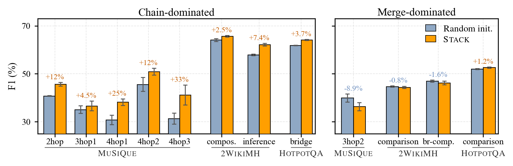
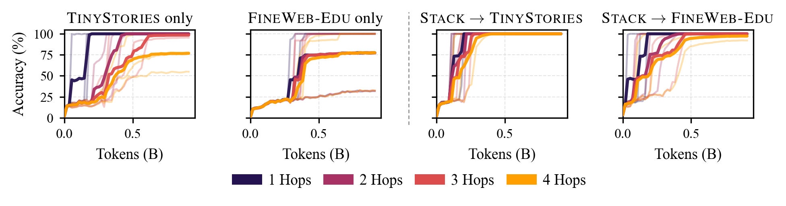
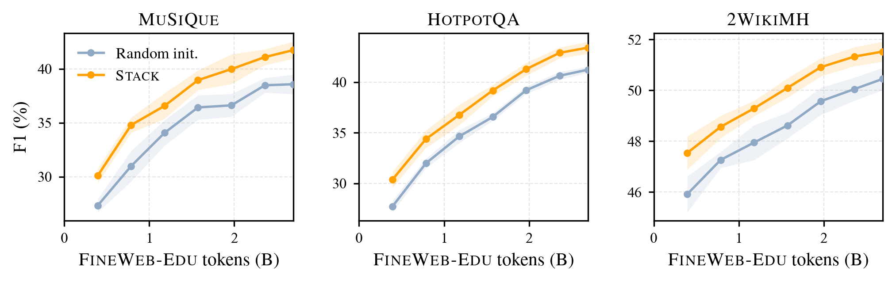

Lasting Effects of Abstract Pretraining Beyond Perplexity
Abstract warm-up
Symbols. Operations. Structure.
The Moon reflects sunlight. Its gravity helps shape the ocean’s tides.
Natural language
Learn from natural-language text.
Multi-hop QA
Connect facts to reach an answer.
Reasoning starts before language.
A brief warm-up on a simple abstract task based on stack memory operations improves multi-hop reasoning, with gains concentrated on sequential composition. In controlled experiments, it also accelerates learning of longer reasoning chains. These effects persist after billions of language-training tokens without a corresponding improvement in language-modeling loss.
MuSiQue gain after fine-tuning
SmolLM-135M · 2.69B language tokens
Additional abstract tokens
~3% at 135M · ~1.1% at 360M
SmolLM-135M & SmolLM-360M
Three multi-hop QA benchmarks
An abstract task with a defined memory rule.
After a sequence of push and pop operations, the model predicts the remaining stack contents from top to bottom. The symbols have no natural-language meaning; the target depends on the sequence of state updates.
Last in, first out.
A pop removes the most recently added token. The remaining contents depend on the whole sequence.
Step through the same operations under each rule.
Start with an empty memory.
The same operations produce different targets under STACK and QUEUE. Replacing the memory rule does not reproduce the STACK gains.
Beyond language-modeling loss
After benchmark-specific fine-tuning, MuSiQue and HotpotQA improve at both model sizes. 2WikiMultiHopQA improves at 135M and is approximately unchanged at 360M. Compare QA F1 with language-pretraining loss below.
Multi-hop question answering
Language loss does not
capture the QA gains.
At 135M, validation-loss curves converge to essentially the same value.
Gains concentrate on sequential composition.
The improvements concentrate on sequential composition: answering one question supplies the information needed to answer the next.
Dependent reasoning chains
Each step uses the previous answer.
Merging or comparing facts
Separate branches contribute to an answer.

Faster learning on controlled multi-hop queries.
DEPO asks a model to follow one to four links through a directed cycle. After STACK and language pretraining, the evaluated four-layer models learn this task faster and reach near-perfect accuracy at all tested hop counts. The language-only baselines still struggle with four-hop queries at the end of fine-tuning.

Initial exposure produces the largest gain.
The same abstract task has a different effect depending on when it appears. An initial phase produces the largest gain among the tested single-phase schedules.
One STACK phase at different insertion points.
Mean Δ F1 across three QA benchmarks · SmolLM-135M
Initial STACK training gives the largest mean QA gain among the tested single-phase schedules.
Mean change in F1 across the three QA benchmarks at each tested insertion point (Figure 9). The initial +2.32 is the mean of the three QA gains reported above. STACK uses a separate optimizer; intermediate insertions pause language pretraining and its learning-rate schedule, which then resume.
More exposure is not always better. Adding three further STACK phases improves HotpotQA and 2WikiMultiHopQA but reduces MuSiQue F1, while increasing the abstract-training budget (paper, Figure 11).
QA gains persist through language pretraining.
At matched language-token counts, separately fine-tuned SmolLM-135M checkpoints retain higher QA F1 with initial STACK training. This advantage is present at every evaluated checkpoint, through the full 2.69B-token language-pretraining budget.

Evaluate specific capabilities alongside perplexity.
Similar language-modeling loss can conceal differences in downstream learning. Here, the effects of abstract training depend on the task’s structure, the capability being evaluated, and when exposure occurs.
Scope of the evidence. The natural-language QA experiments use SmolLM-135M and SmolLM-360M; the controlled experiments use a separate four-layer model. The findings do not establish benefits at larger scales or across all tasks. How abstract training changes the learned computations remains an open question.
Citation
@article{shinnick2026lasting,
title = {Lasting Effects of Abstract Pretraining Beyond Perplexity},
author = {Shinnick, Zachary and Saratchandran, Hemanth and Teney, Damien and van den Hengel, Anton},
journal = {arXiv preprint arXiv:2609.38764},
year = {2026}
}Experiment code will be released upon publication, as noted in the paper.